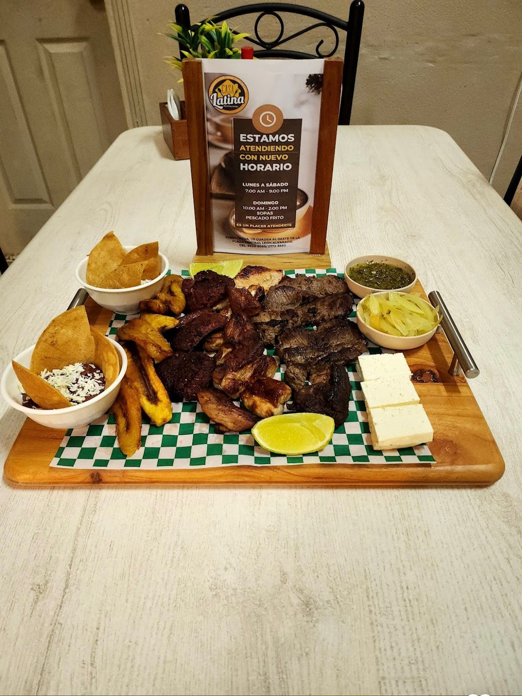

CASA LATINA

Estadísticas de nuestro restaurante
0
Clientes Satisfechos
0
Platillos de Menu
0
Dias de Servicio
0
Comentarios Positivos
Bienvenido al Restaurante
Te ofrecemos una experiencia gastronómica centrada en la cocina tradicional con ingredientes de primera calidad, especializada en comida casera y bebidas frescas. Nuestros platos son un reflejo de la autenticidad y el sabor a casa.


Nuestra cocina
La cocina tradicional está en el corazón de nuestra propuesta culinaria, que preparamos con ingredientes de la más alta calidad.
Somos diferentes, Somos Casa Latina
Somos un restaurante y cafetería en pleno funcionamiento con un amplio menú. Servido 'Estilo de Casa' envuelto en papel, nuestras comidas son excelentes para ir en la tienda o en movimiento.